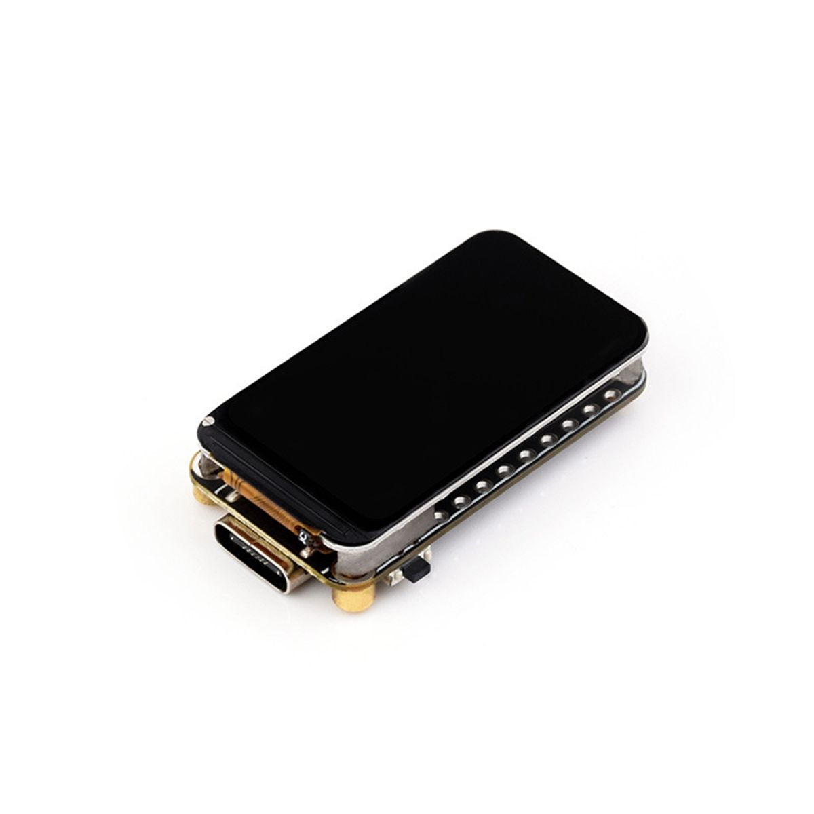

Микроконтроллеры
Плата ESP32-C6 1.47" (дисплей снят)
Плата ESP32-C6: штатный дисплей 1,47″ сломан и снят. В текущем состоянии экран отсутствует; на товарном фото показана исходная комплектация.

Документация
Официальная страница ESP32-C6 от EspressifОбзор ESP32-C6 в документации EspressifПоддержка LCD в ESP-IDF для ESP32-C6
Характеристики
Контроллер по записи склада
ESP32-C6
Текущее состояние
Без дисплея
Фотография
Исходная комплектация с экраном
hw-2026-061